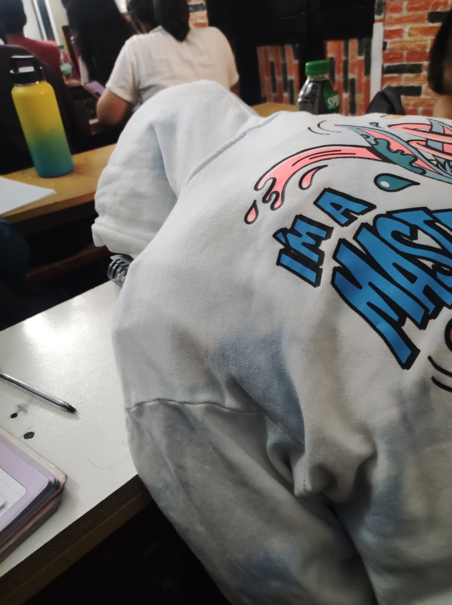
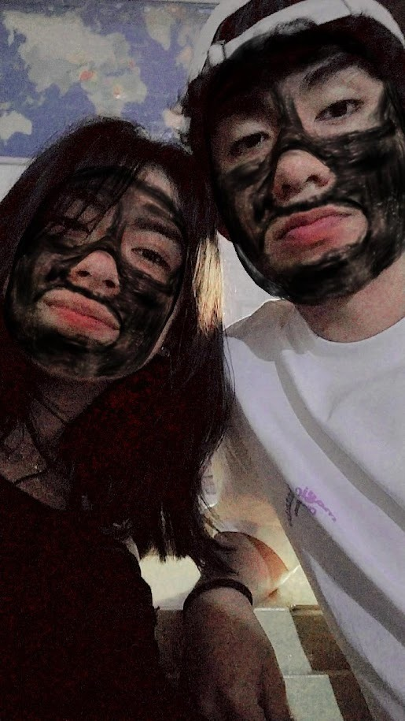

Al inicio no sabía cómo poder acercarme a ti, quizás fue por el hecho de que no iba muy seguido a la academia, pero el solo saber que te vería, fue razón para ir diario, poco a poco nos fuimos acercando, siempre fuiste y serás la razón para ir a cualquier lugar para alegrar mi día viéndote.
Demostrarte mi cariño, fue lo más significativo para mi, mi primer acto de amor hacia mi niña, las flores, para ese detalle lo planee detalladamente, con ello caí en cuenta que realmente quería algo contigo, fue un detalle que nunca lo había hecho, pero hacer cosas nuevas por ti, fue y será lo más gratificante para mi.
